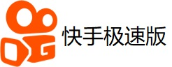

快手极速版邀请码免费领取了！
关于快手
快手是记录和分享大家生活的平台，每天数百万的原创新鲜视频
在这里，发现真实有趣的世界
2019
2018.6 全资收购 A 站
6 月 5 日，快手全资收购 Acfun，在资金、资源、技术等方面给予 A 站大力支持，A 站保持独立品牌和原有团队、维持独立运营。
2017.12 DAU 突破 1.1 亿
技术驱动带来迅猛增长，实现了 DAU 突破 1.1 亿。
2016.4 总用户数突破 3 亿
通过打磨产品和提升用户体验，我们的注册用户数成功突破 3 亿，快手成为全民生活分享平台。
2015.8 App Store TOP 30
快手连续一年 App Store 免费榜 TOP 30。
2015.6 用户突破 1 亿
四年的积累，快手的安卓和 iOS 总用户突破 1 亿！
2015.6 单日视频 260 万
6 月 15 日，我们的单日用户上传视频量突破 260 万！快手的用户有着无比的创造性，无论是在高大上的北上广还是在遥远的三四线城市。
2014.11 改名为快手
由于两年多的发展，应用名已经制约了我们的发展，我们一致决定去掉 GIF，以一个含义更广阔的名字重新出发。
2013.10 转型为短视频社交
经过一年多的努力，我们在短视频社交领域大步前进，彻底摆脱了工具化的制约。无论在用户量和用户活跃时长上都得到了大幅提升。
2012.11 一个艰难的决定
在 11 月，我们做了一个艰难的决定，从纯粹的工具应用转型为一个短视频社区。随着转型带来了很多负面的影响，但是依旧向往着黎明。
2011.3 GIF快手诞生
11年，正是移动互联网风起云涌的时代，成千上万的 App 在那一年诞生，其中也包括 GIF快手。
2011